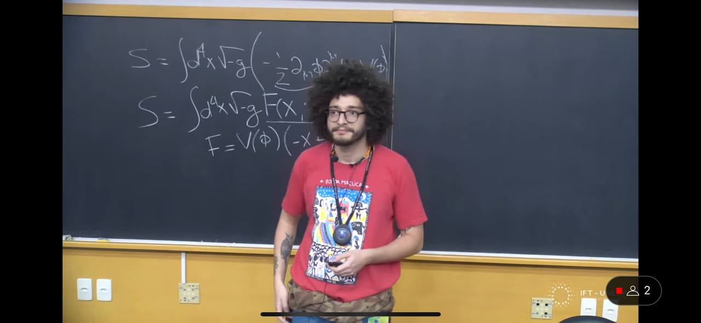

Hello, world!
I'm João Rebouças, an observational cosmologist from Recife, Pernambuco, Brasil. This website showcases my academic research. I enjoy jazz and biking.
I'm João Rebouças, an observational cosmologist from Recife, Pernambuco, Brasil. This website showcases my academic research. I enjoy jazz and biking.